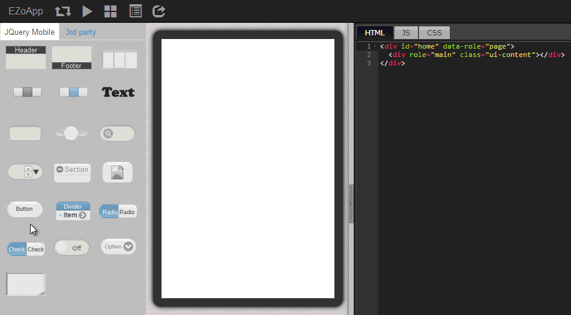
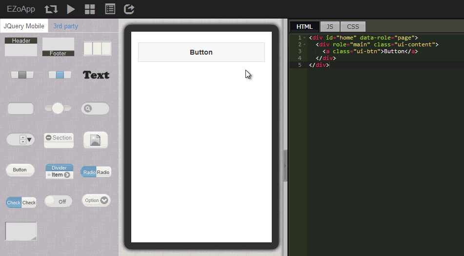
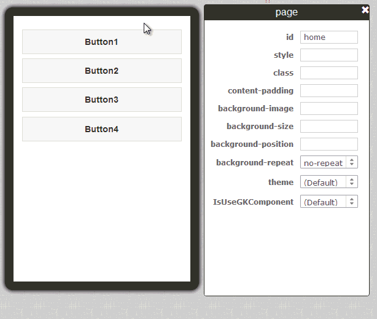
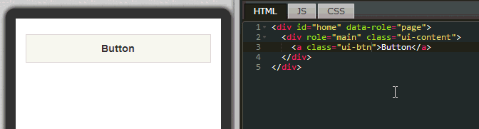

延續上一節所提到的 button ，這一節將利用 button 元件搭配 CSS3 的陰影、邊框、背景...等效果，設計美輪美奐的按鈕，這一節主要會描述如何使用 CSS 的語法，對於相關語法不熟悉的朋友們，也希望能夠多學習一些，畢竟使用 CSS 已經比直接利用 Java 或 Object C 來寫 App 樣式簡單太多太多了，也期待大家能夠寫出非常漂亮的按鈕作品喔！
範例連結：
基本元件實作 - 製作特色按鈕
這邊也提供幾個不錯的 CSS 網站給大家參考學習：
CSS - W3School ( CSS 完整的線上教學 )
CSS3 Maker ( 國外快速產生的 CSS3 語法與效果的網站 1 )
CSS3 Generator ( 國外快速產生的 CSS3 語法與效果的網站 2 )
由於 CSS 已經變成了一個趨勢，EZoApp 也是會大量的使用 CSS 來做版面的編排，也希望大家在練習 EZoApp 之餘，也學會 CSS 囉！
我們直接使用拖拉的方式，把左側的 button 元件拖曳進入編輯畫面中，就會自動產生一個按鈕。

當滑鼠點擊編輯區域中的按鈕，會發現元見右上角出現了幾個小 icon，幾個小 icon 的意思分別為：「綠色加號」複製並新增該元件，「紅色叉叉」刪除該元件，「黑色向上箭頭」選取父層元件，如果我們要快速複製按鈕，只要點選綠色加號，按鈕就會自動產生。

點選按鈕後，我們便可以使用屬性面板來調整按鈕的屬性，調整屬性後，相關屬性的樣式名稱也會加入程式碼內，，這裡我們可以設定按鈕 icon 的位置、按鈕的大小...等屬性，而其他比較進階的屬性，後續就利用 CSS 來調整，下方列出範例檔案中13個按鈕的基本樣式。
<a class="ui-btn"></a>
<a class="ui-btn ui-mini">Button</a>
<a class="ui-btn">Button1</a>
<a class="ui-btn">Button2</a>
<a class="ui-btn"></a>
<a class="ui-btn ui-mini ui-btn-icon-top ui-icon-delete">Button</a>
<a class="ui-btn ui-btn-icon-top ui-icon-delete">Button</a>
<a class="ui-btn ui-icon-delete ui-btn-icon-right">Button</a>
<a class="ui-btn"></a>
<a class="ui-btn"></a>
<a class="ui-btn"></a>
<a class="ui-btn"></a>
<a class="ui-btn"></a>

按鈕元件放上編輯區域後，最後我們就是要利用 CSS 來編輯按鈕的樣式，除了可以控制長寬之外，也可以利用以下幾個設定來設定按鈕的樣式：
-webkit-box-radius: 後方輸入數值，來設定按鈕四個角為圓角 (適用於 Chrome，Firefox 改為 -moz-box-radius，IE 改為 box-radius)，例如：
-webkit-border-radius: 20px; //四個圓角的半徑為20px
-webkit-box-shadow: 後方輸入數值，來設定按鈕陰影 (適用於 Chrome，Firefox 改為 -moz-box-shadow，IE 改為 box-shadow)，例如：
-webkit-box-shadow: inset #ddd 0 0 10px; //內陰影
-webkit-box-shadow: #ddd 0 0 10px; //外陰影
background: 後方可帶入背景圖片，但因為 jQuery Mobile 元件的預設值，必須加入 !important 才能順利呈現，例如：
background: url(圖片網址) center center no-repeat!important;
display: 因為按鈕本身是區塊 ( block ) 屬性，如果要讓按鈕可以一個接一個的排下去，最簡單的方法就是調整 display，例如：
display: inline-block;

上面列出幾個比較特別需要注意的 CSS 樣式，其他的其實都是基本的 CSS，大家可以自行撰寫，並且立即看到效果，是不是相當的方便迅速呢！
再次列出這幾個不錯的 CSS 網站給大家參考學習：
CSS - W3School (CSS完整的線上教學)
CSS3 Maker ( 國外快速產生的 CSS3 語法與效果的網站 1 )
CSS3 Generator ( 國外快速產生的 CSS3 語法與效果的網站 2 )
範例連結：
基本元件實作 - 製作特色按鈕